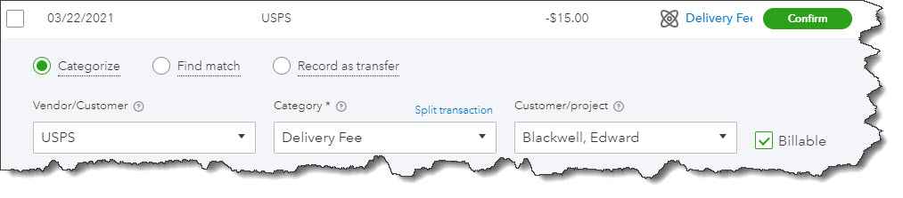
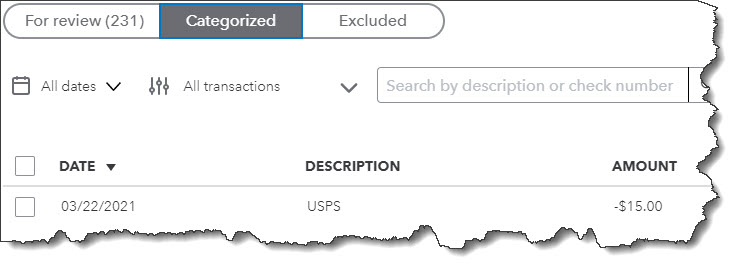

Downloading them is the easy part. QuickBooks Online lets you work with downloaded transactions in numerous ways.
QuickBooks Online was built to import transactions from your online financial institutions. ou can enter them manually but downloading them saves an enormous amount of time and minimizes errors. It also makes reconciliation much easier, since you can see which transactions have cleared without calling the bank or waiting for a printed statement.
Once they’re in QuickBooks Online, your transactions are stored in a list, waiting for you to further define and categorize each one. Let’s look at how you can work with them to make sure your records are as thorough as possible.
As long as you have online access to your bank and credit card accounts, you can set up QuickBooks Online to import cleared transactions. Click the Transactions tab in the toolbar, then click Banking. On the next screen, click Connect account. You’ll see links to popular financial institutions on the next page. If yours isn’t listed, enter its name in the search box at the top of the screen. Follow the onscreen instructions to make your initial connection and start downloading transactions.
When you’ve completed the connection, you can click Link account in the upper right to add more.
After you set up a connection to a bank or credit card account, its account information will appear in a box on the Banking page.
Once you’ve finished adding accounts, you’ll still be on the Banking page. Each of your connected accounts will appear in a box that includes the balance and the number of transactions that need to be reviewed. There will probably be quite a few, dozens or hundreds, the first time you download, since most financial institutions send you 90 days’ worth the first time. Every time your accounts are updated after that, you’ll only get new ones that have cleared since your last connection.
Tip: QuickBooks Online generally updates once every day. If you want to see your new cleared transactions at any time, click Update in the upper right corner.
Click on any of the account boxes, and its list of downloaded transactions will appear below. Make sure that For review is highlighted. You’ll notice that each row has one of two icons at the far right. Review means that QuickBooks Online has not assigned a category to the transaction. Confirm means it has, and it wants you to either approve it or change it. Check these carefully. Sometimes QuickBooks Online gets it right, but not always.
Click on a transaction in the register to open its action box. Here’s a partial view:
QuickBooks Online allows you to add a great deal of information about each individual transaction in the register.
Categorize is checked by default, since this is the most common action you’ll take in the list. Click Find match if, for example, you received a payment on an outstanding invoice, or Record as transfer. We can help you work with the latter two options.
Select a Vendor/Customer and a Category (if QuickBooks Online hasn’t assigned one or it’s not the best one for that transaction). Click in the Billable box if you want to bill this transaction to a Customer/project. You can also Split transaction if you need to divide it between multiple categories and/or billing statuses.
There are several other options below the section pictured above that allow you to:
Before you take either of the latter two actions, talk to us. We don’t want you to do anything that might adversely affect your bookkeeping.
When you’ve finished, click Confirm. The transaction will move from the For review list to the Categorized one. It will now appear in the register for that account.
Once you’ve confirmed a transaction, it moves into the Categorized list.
As you might imagine, it’s a good idea to keep up with your downloaded transactions so you have time to give each the attention it needs. We recommend you review them daily. Your transactions, of course, flow into your reports and taxes, so you want to be sure you’re categorizing them correctly. Let us know if you’d like help with this.
The transactions you record in QuickBooks Online flow into reports and taxes. Are you categorizing them correctly? Ask us.
Have you connected all of your financial accounts to QuickBooks Online? We can help if you’re unsure of this process.
Downloading transactions into QuickBooks Online is only half the job. Ask us about the other half: confirming that data.
Are you confirming the transactions you download into QuickBooks daily? Keeping up with this flow will help ensure accuracy.